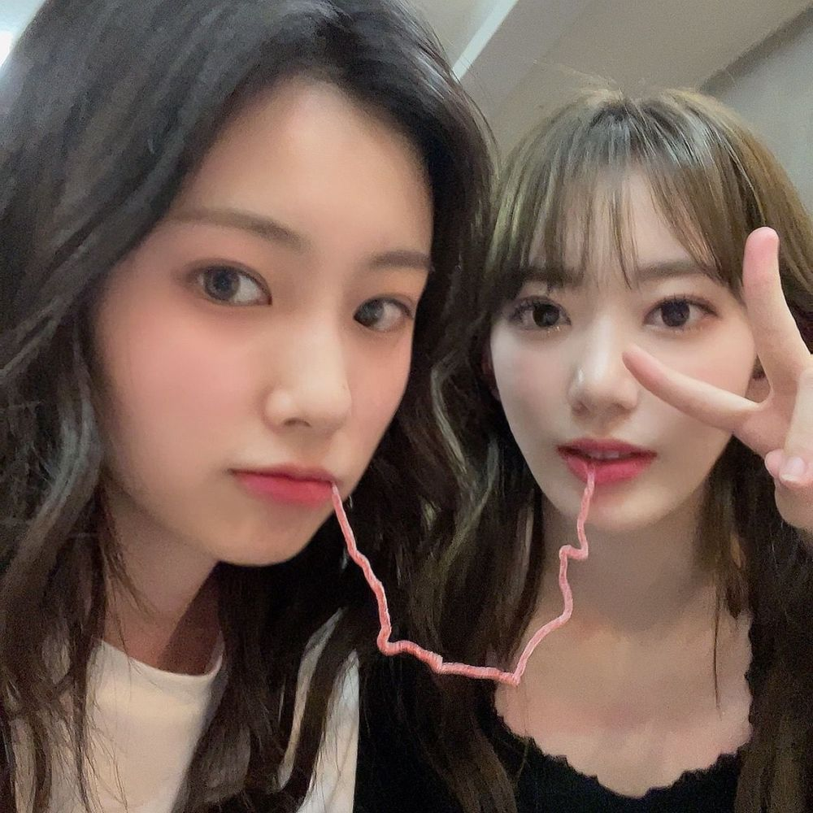

이호 잘 잤어? 난 아직도 어제의 여운이 남아있는 것 같아
진짜 이호 알게되서 난 너무 행복해
나는 재밌는거나 맛있는거나 하루를 이호한테 말해주는게
진짜 좋아 이호 답장보는건 더 좋고 내힐링이라서 🍀
그리고 이건 어제 얘기 못 해서 해외의 위즈원들도
정말 많은데 여러가지 언어로 다 말해주지 못해서 미안해
이호 슬퍼해도 우리 무너지지는 말자 🤙🏻
이호 한테 난 언제나 다정한 사람이될게
끝나고 숙소에서 멤버들이랑 같이 옛날얘기도 하고 수다떨었는데
이런 친구들이 내 곁에 있어서 너무 좋다구 생각했어
끝나고 맛있는거 잔뜩 시켜먹고 채연이가 콩나물넣고 라면도
끓여줬는데 이거 평생 생각날꺼같은 맛 ... 나중에 채연이한테
레시피배워서 알려줄게 진짜 맛있었거든 ㅋㅋㅋㅋ👍🏻👍🏻
